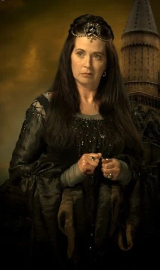

DOMY HOGWARTU
„Są cztery domy: Gryffindor, Hufflepuff, Ravenclaw i Slytherin. Każdy dom ma swoją zaszczytną historię i z każdego wyszli na świat słynni czarodzieje i znakomite czarodziejki. Tu, w Hogwarcie, wasze osiągnięcia będą chlubą waszego domu, zyskując mu punkty, a wasze przewinienia będą hańbą waszego domu, który przez was utraci część punktów. Dom, który osiągnie najwyższą liczbę punktów przy końcu roku, zdobędzie Puchar Domów, co jest wielkim zaszczytem. Mam nadzieję, że każde z was będzie wierne swojemu domowi, bez względu na to, do którego zostanie przydzielone. Ceremonia przydziału odbędzie się za kilka minut w obecności całej szkoły.” ~ Minerwa McGonagall
CEREMONIA PRZYDZIAŁU
Najpierw, na wysokim stołku, tiara jest wnoszona na salę. Zaczyna śpiewać swoją pieśń – każdego roku inną. Następnie odczytana jest lista nowo przyjętych (w kolejności alfabetycznej). Każdy wyczytany uczeń siada na stołek, wkłada na głowę tiarę i czeka, aż ta wyznaczy mu jego dom. Po zakończeniu ceremonii tiara jest wynoszona z Wielkiej Sali do gabinetu obecnego dyrektora. Tiarą Przydziału była tiara Gryffindora. To on wymyślił, by tchnąć w zaczarowany kapelusz to, jakie zdolności posiadać ma dany uczeń domu.
Jeśli chcesz obejrzeć ceremonię przydziału, kliknij tiarę:
ZAŁOŻYCIELE DOMÓW
| Nazwa domu | Założyciel | Zdjęcie | Opis |
|---|---|---|---|
| Gryffindor | Godryk Gryffindor | Godryk był czarodziejem czystej krwi urodzonym w Dolinie Godryka, w Anglii. Cechami pożądanymi przez Gryffindora były męstwo, odwaga, szlachetność, cnota i determinacja. Na początku był dobrym przyjacielem Salazara Slytherina, jednakże pokłócił się z nim o pochodzenie uczniów przyjmowanych do Hogwartu. Obaj byli największymi czarodziejami tamtych czasów, a Rowena Ravenclaw i Helga Hufflepuff czarownicami. Slytherin chciał, aby do szkoły przyjmowano wyłącznie czarodziejów czystej krwi. Godryk, jak Helga Hufflepuff i Rowena Ravenclaw, nie zgadzał się z nim w tej kwestii. To on wpadł na pomysł z Tiarą Przydziału − każdy z założycieli tchnął trochę swoich cech i pragnień w tiarę, a ta po ich śmierci przydzielała do poszczególnych domów nowych wychowanków Hogwartu. Godłem Gryffindoru został lew, a barwami domu zostały wybrane czerwień i złoto. | |
| Slytherin | Salazar Slytherin |

|
Salazar był wężoustym czarodziejem czystej krwi zamieszkałym w Anglii, w Wielkiej Brytanii. Cechami pożądanymi przez Slytherina były pochodzenie z czarodziejskiej rodziny czystej krwi, ambicja, spryt, zaradność i przebiegłość. Do pewnego czasu jego najlepszym przyjacielem był Godryk Gryffindor. Obaj byli największymi czarodziejami tamtych czasów, a Rowena Ravenclaw i Helga Hufflepuff czarownicami. Jakiś czas po założeniu Hogwartu powstał konflikt między Slytherinem a pozostałymi założycielami Hogwartu. Salazar domagał się większej selekcji uczniów − chciał, by do Hogwartu uczęszczali jedynie czarodzieje czystej krwi. Slytherin widząc, że nic nie poradzi na upór pozostałych założycieli, porzucił na zawsze Hogwart. Godłem Slytherinu został wąż, a barwami domu zostały wybrane szmaragd i srebro. |
| Ravenclaw | Rowena Ravenclaw |  | Rowena była czarownicą czystej krwi zamieszkałą w Szkocji, w okresie średniowiecza. Ravenclaw postanowiła, że do swojego domu przyjmować będzie wyłącznie osoby bystre, inteligentne, kreatywne i mądre, gdyż sama taka była. Miała córkę Helenę. Była serdeczną koleżanką Helgi Hufflepuff. Obie były największymi czarownicami tamtych czasów, a Godryk Gryffindor i Salazar Slytherin czarodziejami. Rowena zmarła w wyniku choroby, a legenda głosi, że pękło jej serce po ucieczce córki. Możliwe jest, że zakupiła swoją różdżkę w sklepie Ollivanderów, którzy swoją działalność rozpoczęli w 382 r. p.n.e. Popularna teoria głosi, że to Ravenclaw wybrała miejsce położenia Hogwartu, gdyż było to miejsce jej rodzinnych stron. Godłem Ravenclawu został orzeł, a barwami domu zostały wybrane błękit i brąz. |
| Hufflepuff | Helga Hufflepuff |

|
Helga była średniowieczną czarownicą czystej krwi, pochodzącą z Walii. Podczas gdy inni założyciele obmyślali jakich uczniów będą przyjmować do swoich domów ona powiedziała, że przyjmie wszystkich innych. Jedynej cechy, której wyraźnie nienawidziła Helga było lenistwo. Helga cechowała się obdarowywaniem ludzi swoją przyjaźnią, była miła, pracowita i wesoła. Doceniała i popierała wierność, sprawiedliwość, uprzejmość, uczciwość i pokojowe nastawienie. Była także wielką przyjaciółką Roweny Ravenclaw. Obie były największymi czarownicami tamtych czasów, a Godryk Gryffindor i Salazar Slytherin czarodziejami. Helga była dobra z zaklęć gastronomicznych i dotyczących jedzenia, jej przepisy nadal są stosowane w Hogwarcie. Godłem Hufflepuffu został borsuk, a barwami domu zostały wybrane żółć i czerń. |
Gryffindor
Wychowankowie Godryka cechują się odwagą, męstwem, cnotą, determinacją, śmiałością i trzymaniem nerwów w trudnych sytuacjach. Studenci Gryffindoru byli nazywani Gryfonami. Gryfoni i Ślizgoni zacięto między sobą rywalizowali, ponieważ Salazar uważał, że jedynie ci czystej krwi mają prawo uczęszczać do Szkoły Magii i Czarodziejstwa, a Gryffindor był temu przeciwny. Relikwią tego domu jest miecz, duchem – Sir Nicholas de Mimsy−Porpington. Godłem Gryffindoru został lew, a barwami domu zostały wybrane czerwień i złoto.

Jeśli chcesz poczytać więcej na temat Gryffindor, kliknij tutaj!
Slytherin

Uczniowie domu Salazara Slytherina cechują się sprytem, przebiegłością, ambicją, braterstwem, zaradnością i śmiałością. Jego członkowie są przez wielu uważani za podłych, aroganckich, nieuczciwych i parających się czarną magią. W gwarze uczniowskiej studenci Slytherinu nazywani byli Ślizgonami. Ślizgoni i Gryfoni zacięto między sobą rywalizują, ponieważ Salazar uważał, że tylko ci czystej krwi mają prawo uczęszczać do Szkoły Magii i Czarodziejstwa, a Gryffindor był temu przeciwny. Słynnym artefaktem jest medalion Slytherina, duchem – Krwawy Baron. Godłem Slytherinu został wąż, a barwami domu zostały wybrane szmaragd i srebro.
Jeśli chcesz poczytać więcej na temat Slytherin, kliknij tutaj!
Ravenclaw
Wychowankowie Roweny cechują się inteligencją, kreatywnością, mądrością, oryginalnością, roztropnością i akceptacją innych. Krukoni i Puchoni zazwyczaj między sobą rywalizują, lecz nie na taką skalę, co Gryfoni i Ślizgoni. Diadem w domu tym jest artefaktem, zaś duchem – Szara Dama, sama córka Roweny. Godłem Ravenclawu został orzeł, a barwami domu zostały wybrane błękit i brąz.

Jeśli chcesz poczytać więcej na temat Ravenclaw, kliknij tutaj!
Hufflepuff

Studenci Hufflepuffu cechują się wiernością, sprawiedliwością, lojalnością, uprzejmością, pracowitością i pokojowym nastawieniem. Puchoni i Krukoni zazwyczaj między sobą rywalizują, lecz nie na taką skalę, co Gryfoni i Ślizgoni. Relikwią tego domu jest czarka (naczynie), zaś duchem – Gruby Mnich. Godłem Hufflepuffu został borsuk, a barwami domu zostały wybrane żółć i czerń.
Jeśli chcesz poczytać więcej na temat Hufflepuff, kliknij tutaj!